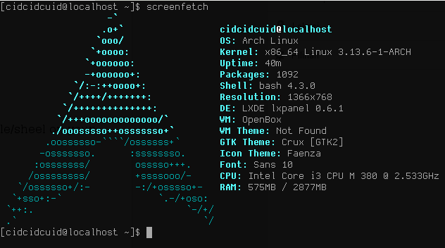

HELP!! MY CODE IS BREAKING!!
- In Modern day computing large data centers and other servers use Linux as opposed to windows
- Due to the high performance of the monolithic kernel system of Linux.
- So, better luck being the guy that pushes the code to the server and doesn't know Linux.
The Terminal Hell

It's black, It's close, it's looking me in the eyes, it scares me, Help!!!
- Steep Learning Curve – Requires command-line knowledge.
- Frequent CLI Usage – Many tasks need terminal commands.
- Complex Package Management – Different distros, different tools (apt, yum, pacman).
- Permissions & Root Access – Sudo, chmod, chown can be confusing.
- Troubleshooting via Terminal – Logs and debugging require CLI skills.
- Lack of GUI for Advanced Tasks – System settings often need text-based configs.
- Syntax Sensitivity – Small mistakes in commands or config files can break the system.
The Distro Dilemma
Why so many bright colors?
- Open-Source Nature – Anyone can modify and create their own version.
- Different Use Cases – Distros are tailored for servers, desktops, embedded systems, hacking, gaming, etc.
- Varied User Preferences – Some prefer minimal systems (Arch, Gentoo), others want ease of use (Ubuntu, Mint).
- Different Package Managers – Debian-based (apt), Red Hat-based (dnf/yum), Arch-based (pacman).
- Diverse Desktop Environments – GNOME, KDE, XFCE, etc., leading to multiple flavors of the same distro.
- Corporate vs. Community Support – Some distros are enterprise-focused (RHEL, SUSE), while others are community-driven (Debian, Arch).
- Experimentation & Innovation – Developers create new distros to test new features, performance, or security models.
Dilema Of the general Public
- Windows Dominance – Most developers prioritize Windows due to its large user base.
- Limited Vendor Support – Some software companies don't develop of Linux versions due to low it’s OS market share.
- Lack of Official Drivers – Some GPU and hardware vendors optimize for Windows first.
- Reliance on Emulation – Tools like Wine and Proton help, but not all games/apps work well.
Why No Games Me Want Games Me Miss Games
Things You May not have Known!!
- Yes, GNU/Linux and it's distros are not GUI based in themselves
- YES, different libraries can be used like Gnome, Kde-Plasma etc.
- Yes, you'll have to look at your terminal for hours to solve one package conflict.
- Yes, you'll have to spend countless hours in nano or VIM to resolve it.
- Yes, you'll have learned VIM by then.
- Yes, most companies in the server game require you to know or have an idea about Linux in order to join.
I'm stuck help me windows!!